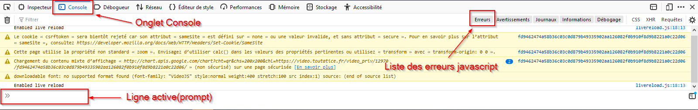

Ajouter de l'interactivité : Introduction à JavaScript
Première approche
Javascript ?
Javascript, souvent raccourci en JS, est un langage de programmation interprété, tout comme Python. Il est une des briques angulaire de HTML 5, avec HTML et CSS.
A chaque fois qu'une page fait plus que simplement afficher du texte et des images - un contenu statique, copmme par exemple affiocher des animations, des cartes interactives, des menus déroulants, etc, il y a de bonnes chances pour que ce soit un script JavaScript qui en soit la raison.
Comme souvent, un tutoriel complet sur Javascript est disponible sur MDN Web Docs. Vous y trouverez de nombreuses explications absentes de ce cours.
Une première approche : modifier le texte d'un paragraphe par un click.
Tips
Cette partie est intégralement traitée sous la forme d'une vidéo :
Observons les codes de la page web (corrigé pour la position de la balise <script>1) :
<!DOCTYPE html>
<html lang="fr">
<head>
<meta charset="utf-8" />
<title>Un exemple de l'utilité de JS </title>
<link href="style.css" rel="stylesheet" type="text/css" />
</head>
<body>
<p>Bonjour Inconnu !</p>
<script>
let texte = document.querySelector('p');
texte.addEventListener('click', changeNom);
function changeNom(){
let name = prompt("Entrez votre nom :");
texte.textContent = "Bonjour "+name+" !";
}
</script>
</body>
</html>
p{
text-align: center;
border: 2px solid rgba(0,0,200,0.6);
background: rgba(0,0,200,0.3);
color: rgba(0,0,200,0.6);
box-shadow: 1px 1px 2px rgba(0,0,200,0.4);
border-radius: 10px;
padding: 3px 10px;
cursor:pointer;
}
Ainsi que l'arbre du DOM correspondant :

La construction d l'arbre du DOM se fait au fur et à mesure de la lecture du fichier .html, et est présentée sur le schéma ci-dessus de gauche à droite. La balise <script> étant la dernière balise présente dans <body>, ell est lue en dernier.
L'exécution du code JS est donc la suivante :
- Création d'une variable
textequi référence la première balise<p>trouvée dans le DOM (surlignage jaune ). - Ajout à l'élément
<p>sélectionné d'un écouteur d'évènement qui attends une action clique-gauche (flèche rouge ). - Fin de la lecture du code, avec création d'une référence vers une fonction
changeNom, qui n'est pas exécutée.
Une fois la construction du DOM terminée, le gestionnaire d'évènement général du navigateur écoute toutes les actions de l'utilisateur (mouvement souris, clique gauche ou clique droit, appuis sur le clavier, voire écoute micro si celui-ci a été activé....)
Un clique-droit sur l'élément <p> déclenche l'exécution de la fonction changeNom (flèche bleue , qui elle même va modifier l'attribut textContent de l'élément <p> (flèche verte ).
Bases de Javascript
Séparer le code
Pour conserver la cohérence de HTML5, on a séparé le code HTML, définissant la nature des élements de la page, du CSS, qui définit la forme que prendront ces éléments.
Il faudra faire de même avec le code javascript, en le séparant du code html en renseigant dans la balise <script> l'attribut src avec l'adresse (absolue ou relative) du fichier contenant le code javascript. Ainsi si le fichier javascript s'appelle mon_fichier.js et est dans le même dossier que le fichier html, il suffira d'écrire la balise suivante :
<script src="mon_fichier.js"> </script>
.js contenant du code javascript.
L'exemple précédent peut donc être classé en trois fichiers :
Fichier `pagesimple.html`
<!DOCTYPE html>
<html lang="fr">
<head>
<meta charset="utf-8" />
<title>Un exemple de l'utilité de JS </title>
<link href="style.css" rel="stylesheet" type="text/css" />
</head>
<body>
<p>Bonjour Inconnu !</p>
<script src="code.js"></script>
</body>
</html>
Fichier `style.css`
p{
text-align: center;
border: 2px solid rgba(0,0,200,0.6);
background: rgba(0,0,200,0.3);
color: rgba(0,0,200,0.6);
box-shadow: 1px 1px 2px rgba(0,0,200,0.4);
border-radius: 10px;
padding: 3px 10px;
cursor:pointer;
}
Fichier `code.js`
let texte = document.querySelector('p');
texte.addEventListener('click', changeNom);
function changeNom(){
let name = prompt("Entrez votre nom :");
texte.textContent = "Bonjour "+name+" !";
}
Utilisation de l'inspecteur d'objet
L'inspecteur d'objet permet d'avoir accès à une console javascript, fort utile pour aider au déboggage de code.
Celle-ci est disponible une fois l'inspecteur d'objet ouvert :

prise en main de la console js
- Ouvrez la console javascript de votre navigateur, sur une page au choix.
- Tapez le code suivant :
function plop(){ console.log("Plop !"); } -
Exécutez la fonction
plop:Que se passe-t-il ?plop(); -
Tapez maintenant le code suivant :
let cible = document.querySelector("h1"); cible.addEventListener('click', plop); - Cherchez la première balise
<h1>de la page et cliquez sur cet élément. Que se passe-t-il ? - Tapez le code suivant :
Comment faire pour déclencher l'écriture dans la console à partir de cet événement ?
cible.addEventListener('mouseover', plop);
Utilisation de console.log()
Il est parfois difficile de voir comment s'exécute un code javscript. L'utilisation de console.log(message); dans votre code, avec comme message une chaîne de caractère explicative, est parfois un bon moyen de vérifier qu'un bloc de code est exécuté par javascript.
Programmer en javascript : les bases
Déclaration des variables
Javascript est un langage faiblement typé. Cela signifie que lorsqu'on déclare une variable, il n'est pas nécessaire de déclarer son type. Il suffit de déclarer son nom, en ajoutant devant les mots-clés let ou var selon la situation2. On peut aussi déclarer et initialiser une variable dans le même temps :
let x ; // x est déclarée, mais pas initialisée
let y = 10; // y est déclarée et initialisée à la valeur 10
var z ="toto"; // z est déclarée et initialisée avec la chaîne "toto"
letdéfinit des variables dont la portée (=l'ensemble des lignes où la variable est connue et utilisable) est celle dubloc;vardéfinit des variables dont la portée est celle de la fonction.
Pour ceux intéressés les exemples ci-dessous sont parlants :
Exemples de portées2
les deux codes suivant expliquent en partie la différence entre let et var
function varTest() {
var x = 31;
if (true) {
var x = 71; // c'est la même variable (même fonction)!
console.log(x); // 71
}
console.log(x); // 71
}
function letTest() {
let x = 31;
if (true) {
let x = 71; // c'est une variable différente (changement de bloc)
console.log(x); // 71
}
console.log(x); // 31
}
Une exécution pas-à-pas est possible grâce au site pythontutor.com.
Opérations arithmétiques
Les opérations arithmétiques de base sont les même qu'en Python : \(+\), \(-\), \(\times\) et \(\div\) sont représentées par
+, -, * et /.
Ainsi le calcul \(3 + \dfrac{4}{2-7}\) est effectué par :
>> 3 + 4/(2-7)
2.2
Les opérations de modulo et d'exposants sont utilisables comme en Python :
>> 22%5
2
>> 5**3
125
Quotient de la division euclidienne
Il n'est pas possible comme en Python d'utiliser l'opérateur // pour obtenir le quotient de la division euclidienne de deux entiers. Il faut donc utiliser une fonction spécifique du module Math pour l'obtenir :
>>> Math.floor(24/5)
4
Les fonctions mathématiques plus complexes ( \(\sqrt{~~}\), \(sin\), \(cos\)...) peuvent être utlisées en les préfixant par Math.
>> Math.sqrt(25)
5
>> Math.cos(45)
0.5253219888177297
Les chaînes de caractères
Le type primitif chaîne de caractère en javascript est repéré comme en python par un encadrement par des guillemets simples ', doubles " ou même des accents graves `.
Ce type primitif est converti automatiquement en objets String dès qu'on fait appel aux méthodes des objets String. Ainsi si ma_chaine est une chaine de caractère :
ma_chaine.lengthdonne la longueur de la chaîne de caractères ;ma_chaine.toLowerCase()renvoie la chaîne de caractères en minuscules ( on a de même.toUpperCase())ma_chaine[i]renvoie le caractère d'indicei(toujours en partant de zéro !)- ...
La totalité des méthodes liées aux objets String sont décrits dans cette page.
Javascript et le transtypage
En Python, une instruction telle que "Bonjour numéro "+6 ne fonctionne pas. On reçoit une erreur TypeError: can only concatenate str (not "int") to str, ce qui signifie qu'il est impossible de concaténer un type str avec autre chose.
Contrairement à Python, en javascript il n'est pas nécessaire de transtyper une variable pour qu'elle soit intégrée à une opération avec d'autre types de variables. L'instruction "Bonjour numéro "+6 renvoie la chaîne de caractères "Bonjour numéro 6"3.
C'est très pratique, mais attention ! Certaines erreurs peuvent très vite être commise ! Un petit exemple de comportement de Javascript est donné dans l'exemple ci-dessous :
Fonctions
Une fonction en javascript est introduite par le mot-clé function, suivie du nom de la fonction, de parenthèses contenant ou non des arguments. Le bloc de code de la fonction est délimité par une paire d'accolades ouvrantes et fermantes.
Une valeur de retour est possible en utilisant le mot clé return.
Exemples
Fonction calculant le discriminant d'un polynôme de degré 2
function discriminant(a,b,c){
return b**2-4*a*c;
}
true si les deux vecteurs \(\vec{u}\left(\begin{array}{c}x1\\y1\end{array}\right)\) et \(\vec{v}\left(\begin{array}{c}x2\\y2\end{array}\right)\) sont colinéaires, et false sinon
function colineaires(x1, y1, x2, y2){
det = x1*y2-x2*y1;
return det==0;
}
Structures conditionnelles
La structure conditionnelle de base est obtenue grâce au code suivant :
if ( booleen ){
// Bloc Si
}
else {
// Bloc Sinon
}
Remarques
-
la condition booléenne doit être entre parenthèses. L'interpréteur javascript signalera une erreur dans le cas contraire :
-
il n'y a pas comme en Python de clause
elif. Si on veut tester plusieurs sous conditions, il faudra imbriquer les structures conditionnelles. Voici une comparaison entre python et javascript :if condition 1 : # bloc condition 1 elif condition 2 : # bloc condition 2 else : # bloc sinonif (condition 1){ // bloc condition 1 } else { if (condition 2) { // bloc condition 2 } else { // bloc sinon } }L'imbrication est tout de suite plus compliquée... Il faut être rigoureux, et particulièrement être attentif à bien fermer les accolades dès qu'on en a ouvert une.
-
Pour les cas avec trop d'imbrications, il est parfois nécessaire de se servir plutôt de l'instruction
switchpour laquelle la documentation est très bien faite.
ET et OU en javascript
Attention ! En javascript les mots-clés AND et OR n'existent pas :
- pour obtenir
ETon utilise&&; - pour obtenir
OUon utilise||;
Une condition \(\in [0;10]\) s'exprimera alors sous la forme (a>=0) && (a=<10).
Boucles bornées
Une boucle bornée en javascript s'écrit de la manière suivante :
for (initialisation; conditions de continuité; incrémentation){
// bloc d'instructions à répéter
}
for (let i=0; i<10; i=i+1){
// bloc d'instructions à répéter
}
- on commence par créer une variable sur laquelle on va itérer :
var i=0; - on indique une condition de continuité de l'action :
i<10;(tant queiest inférieur à10, on effectue le bloc d'instruction de la boucle) - on indique comment varie la variable à chaque tour de boucle :
i=i+1(à chaque tour, la variableiest incrémentée de 1$.
Il faut noter que la variable i n'existe plus une fois la boucle terminée, vu qu'n a utilisé let :
Boucles non-bornées
Une boucle non-bornée est obtenue en javascript par l'instruction suivante :
while (booleen) {
// bloc d'instruction
}
Un exemple d'utilisation avec les chaines de caractères est disponible ici :
Exercices
Exercice 1
Ecrivez une fonction nommée isTooLong qui :
- prend une chaîne de caractères comme argument;
- renvoie vrai si la longueur de la chaîne dépasse 10 caractères;
- renvoie faux dans les autres cas.
function isTooLong(mot){
if (mot.length>10){
return true;
}else{
return false;
}
}
Exercice 2
Créez une fonction nommée aprec qui :
- prend une note sur 20 en argument ;
- renvoie
"Hideux"si la note est entre 0 et 7 exclus ; - renvoie
"Moche"si la note entre 7 et 10 exclus ; - renvoie
"Nice"si la note entre 10 et 15 exclus ; - renvoie
"GG"si la note entre 15 et 20 inclus ; - renvoie
"BUG"si la note n'est pas correcte.
function aprec(note){
if ((note>=0) && (note< 7)){
return "Hideux;
} else if ((note>=7) && (note< 10)){
return "Moche";
} else if ((note>=10) && (note< 15)){
return "Nice";
} else if ((note>=15) && (note<= 20)){
return "GG";
} else {
return "BUG";
}
}
Exercice 3
Écrivez une fonction max3 qui renvoie le plus grand nombre parmi trois entiers passés en argument.
function max3(n1, n2, n3){
if ((n1>=n2) && (n1>=n3)){
return n1
} else if ((n2>=n1) && (n3>=n1)){
return n2
} else {
return n3
}
}
Exercice 4
Créer une fonction affichant les 10 premiers multiples de 7.
function multiple7(){
for (let i=0; i<10; i=i+1){
console.log("7x"+i+" = "+(7*i));
}
}
Exercice 5
Créer une fonction puissance2(v) qui renvoie grâce à une boucle non-bornée l'entier n tel que :
On supposera que v est bien un entier positif.
function puissance2(v){
let p =0;
while (v>1){
v = Math.floor(v/2);
p = p+1;
}
return p
}